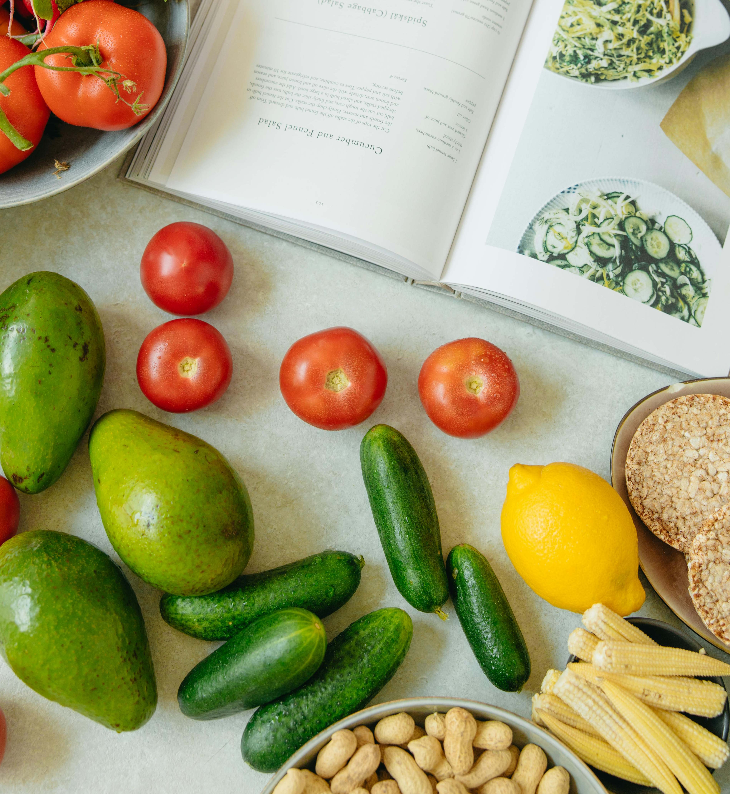

When I was young, I built balls, planes, and animals with paper. I even built a soccer game with paper to play with friends. Getting older, I built plastic model kits. Gundam mobile suits were my favourites. In my early career, I worked as an engineer in various manufacturing environments where I kept checking out and solving different problems and issues around the production processes. When I had the opportunity to work in the software field, I started building different software tools and systems to help companies meeting their missions. I love how I can tackle one hurdle after another in achieving the goals. And here I am, preparing myself to find and solve yet another puzzle.
The nature not only provides a relief to our busy, stressful life, it also lets us value of what surrounding us. May it be the plants or the trees thriving in the forest, the birds flying in the sky, the animals crawling on the trees, or the fish swimming in the sea, but the most important, it is the people around us. I love hiking and camping with family and friends. Thanks to the wonderful nature in Canada, we can spend almost every summer weekend enjoying all kinds of outdoor activities.

Not only I may get merits (or critics) on my food, I can also experiment any new receipe. I like improving my cooking; at the same time, I like trying new things. With social media flooding with all kinds of cooking video, it is not difficult to pick up one or two, and start doing something new. I find cooking also let me think out of the box. At times, I can think of an innovative idea or a solution to a problem while I am immersed in deciding the next step in the receipe.